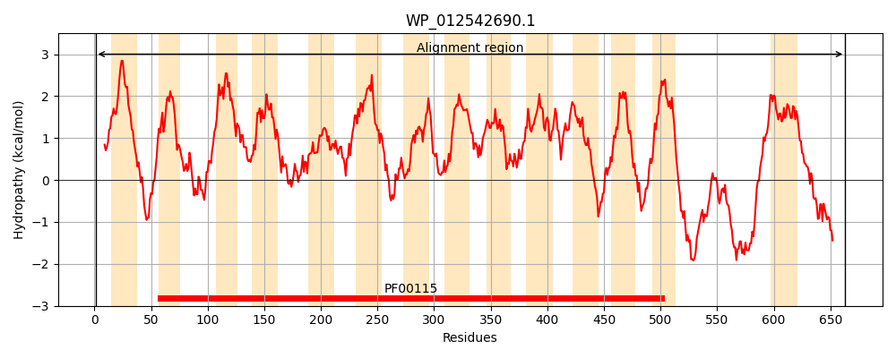
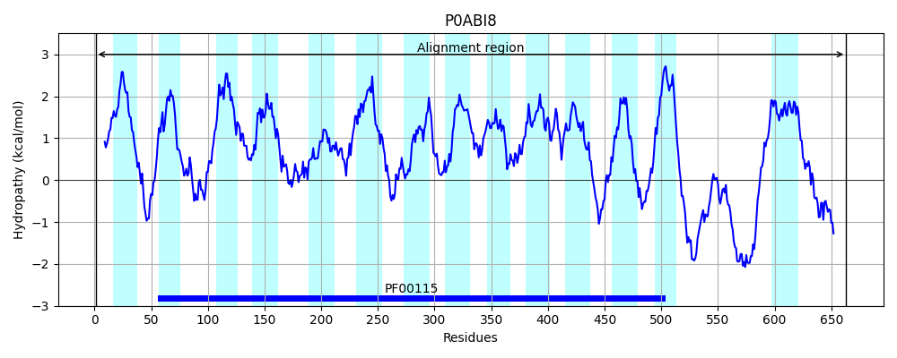
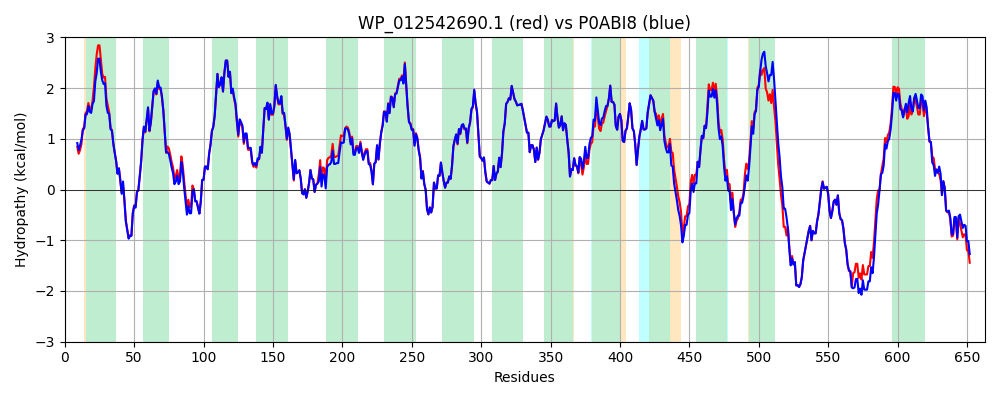

Hit Accession: P0ABI8
Hit TCID: 3.D.4.5.1
Hit Description: gnl|BL_ORD_ID|8706 gnl|TC-DB|P0ABI8|3.D.4.5.1 Ubiquinol oxidase subunit 1 OS=Escherichia coli (strain K12) GN=cyoB PE=1 SV=1
Mach Len: 663
e:0.000000
Query TMS Count : 14
Hit TMS Count: 14
TMS-Overlap Score: 15.500000
Predicted Substrates:CHEBI:5584;hydron
BLAST Alignment:
Score: 3351 , Bit scores: 1295 bits, E-value: 0.0e+00, Alignment length: 663, Percentage identity: 92
Query: 1 MFGKLTLDAVPYHEPIIVVTVAAIIIGGLALLAAITYFGKWSYLWNEWLTSVDHKRLGIMYVIVAIVMLLRGFADAVMMRSQQVLASAGEAGFLPPHHYDQIFTAHGVIMIFFVAMPFVIGLMNLVVPLQLGARDVAFPFLNNLSFWFTVVGVILVNLSLGVGEFAQTGWLAYPPLSGIEYSPGVGVDYWIWALQLSGIGTTLTGINFFVTIIKMRAPGMTMFKMPVFSWASLCANILIIASFPILTVTIALLTLDRYLGTHFFTNDMGGNMMMYINLIWAWGHPEVYILVLPVFGVFSEIAATFSRKRLFGYTSLVWATVCITVLSFIVWLHHFFTMGAGANVNAFFGITTMIIAIPTGVKIFNWLFTMYQGRIVFNSAMMWTIGFIVTFSVGGMTGVLLAVPGADFVLHNSLFLIAHFHNVIIGGVVFGCFAGLTYWWPKAFGFTLNETWGKRAFWFWIIGFFVAFMPLYVLGFMGMTRRLSQQIDPQFHPMLVVAACGAALIACGILCQLIQFYVSIRDRDQNRDLTGDPWGGRTLEWATSSPPPFYNFAIVPQVHERDAFWEMKEKGEAYKQPAHYEEIHMPKNSGAGIVIAAFATVFGFAMIWHIWWMAIASFIGIVATWIIKSFDEDVDYYVPVAEVEKLEKQHFDEINKAGLKNGN 663
MFGKL+LDAVP+HEPI++VT+A II+GGLAL+ ITYFGKW+YLW EWLTSVDHKRLGIMY+IVAIVMLLRGFADA+MMRSQQ LASAGEAGFLPPHHYDQIFTAHGVIMIFFVAMPFVIGLMNLVVPLQ+GARDVAFPFLNNLSFWFTVVGVILVN+SLGVGEFAQTGWLAYPPLSGIEYSPGVGVDYWIW+LQLSGIGTTLTGINFFVTI+KMRAPGMTMFKMPVF+WASLCAN+LIIASFPILTVT+ALLTLDRYLGTHFFTNDMGGNMMMYINLIWAWGHPEVYIL+LPVFGVFSEIAATFSRKRLFGYTSLVWATVCITVLSFIVWLHHFFTMGAGANVNAFFGITTMIIAIPTGVKIFNWLFTMYQGRIVF+SAM+WTIGFIVTFSVGGMTGVLLAVPGADFVLHNSLFLIAHFHNVIIGGVVFGCFAG+TYWWPKAFGF LNETWGKRAFWFWIIGFFVAFMPLY LGFMGMTRRLSQQIDPQFH ML++AA GA LIA GILC +IQ YVSIRDRDQNRDLTGDPWGGRTLEWATSSPPPFYNFA+VP VHERDAFWEMKEKGEAYK+P HYEEIHMPKNSGAGIVIAAF+T+FGFAMIWHIWW+AI F G++ TWI+KSFDEDVDYYVPVAE+EKLE QHFDEI KAGLKNGN
Sbjct: 1 MFGKLSLDAVPFHEPIVMVTIAGIILGGLALVGLITYFGKWTYLWKEWLTSVDHKRLGIMYIIVAIVMLLRGFADAIMMRSQQALASAGEAGFLPPHHYDQIFTAHGVIMIFFVAMPFVIGLMNLVVPLQIGARDVAFPFLNNLSFWFTVVGVILVNVSLGVGEFAQTGWLAYPPLSGIEYSPGVGVDYWIWSLQLSGIGTTLTGINFFVTILKMRAPGMTMFKMPVFTWASLCANVLIIASFPILTVTVALLTLDRYLGTHFFTNDMGGNMMMYINLIWAWGHPEVYILILPVFGVFSEIAATFSRKRLFGYTSLVWATVCITVLSFIVWLHHFFTMGAGANVNAFFGITTMIIAIPTGVKIFNWLFTMYQGRIVFHSAMLWTIGFIVTFSVGGMTGVLLAVPGADFVLHNSLFLIAHFHNVIIGGVVFGCFAGMTYWWPKAFGFKLNETWGKRAFWFWIIGFFVAFMPLYALGFMGMTRRLSQQIDPQFHTMLMIAASGAVLIALGILCLVIQMYVSIRDRDQNRDLTGDPWGGRTLEWATSSPPPFYNFAVVPHVHERDAFWEMKEKGEAYKKPDHYEEIHMPKNSGAGIVIAAFSTIFGFAMIWHIWWLAIVGFAGMIITWIVKSFDEDVDYYVPVAEIEKLENQHFDEITKAGLKNGN 663 | Protein Hydropathy Plots: |
|---|
|  |  |
Pairwise Alignment-Hydropathy Plot:
|
|---|
|  |